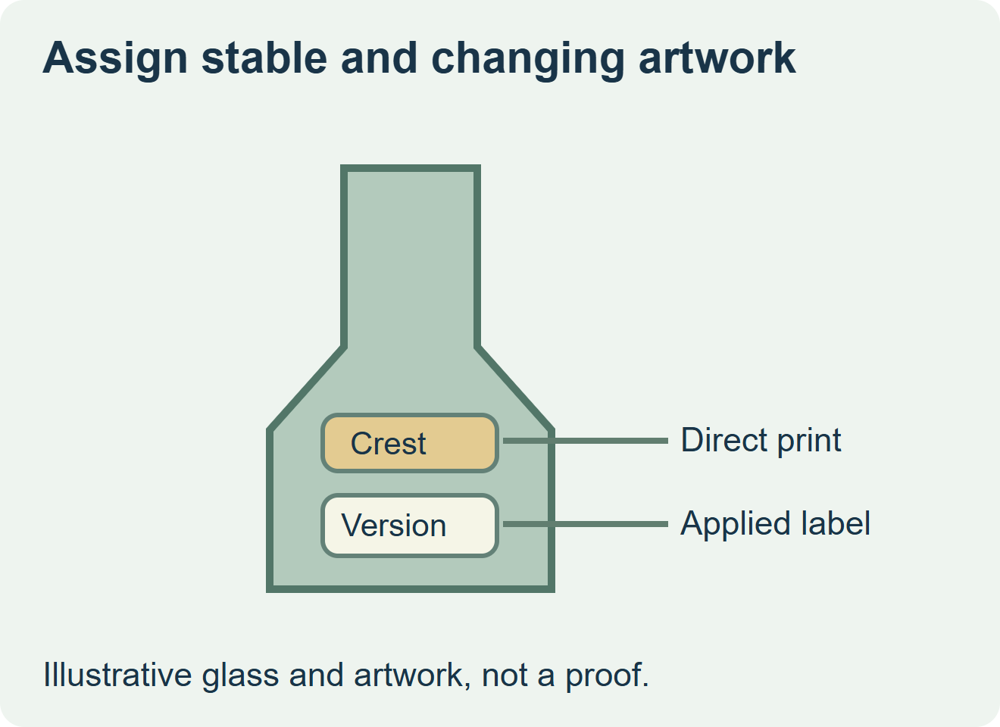
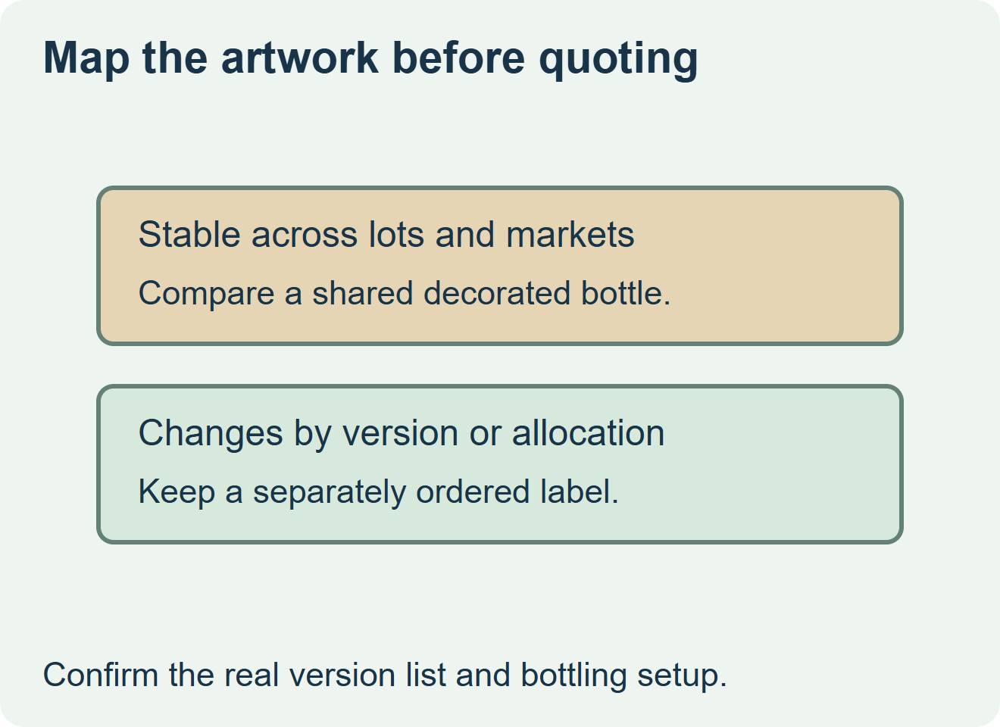

Consider direct glass decoration for artwork you expect to keep across the relevant buying window. Keep vintage, market or edition fields on applied labels when those changes would otherwise leave decorated bottles unusable. If the main identity changes frequently, compare a stock bottle and a full label set before committing to decorated glass.


Separate what the bottle carries from what the order assigns
Mark stable, versioned and late-assigned information on the proof. PGP Glass lists screen printing and pressure-sensitive application, including combinations, among its decorating options. A decorator’s availability depends on the bottle and design. Ask the decorator which surfaces and inks it supports, and confirm who will apply each remaining label. PGP Glass decoration options
| Artwork change pattern | Proposal to compare | Approval evidence |
|---|---|---|
| Brand mark is stable across versions | Decorate a shared bottle with the stable mark, then label each version | Proof of glass decoration and a finished bottle for each affected applied label. |
| Most fields change together | Use a common blank bottle with a version-specific label set | Accepted fit, adhesion and the correct version on the finished bottle. |
| The design depends on the direct-printed appearance | Decorate the required variants as separate bottle items | Representative samples, named artwork versions and a plan for remaining stock. |


Compare bottles that are ready to sell
Ask both suppliers for their setup, proof, minimum and delivery assumptions. Include the bottler’s application work and each version’s residual inventory. If the decorated route needs a separate back label, check the actual landing, alignment with the printed area and the label’s bond on that surface. Keep any comparison of durability tied to samples that have gone through the intended packing, storage and service route.
In a hypothetical winery purchase, a stable crest could stay on the bottle while vintage and market details live on an approved versioned label. The benefit depends on whether the bottle remains usable across those actual variants and whether the bottler can handle the late label step.
Discuss the unresolved label requirement
Send the bottle drawing and finish, stable and variable artwork layers, which lots or markets use each version, the filling and labeling route, and estimated accepted bottle quantities by version. Review wine label options and prepare a label specification inquiry. The contact page opens an email draft and lists email or WhatsApp for attachments. Supply, proof options, testing, pricing and timing require project confirmation.